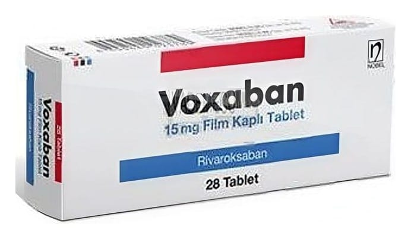

Voxaban 15 mg Film Kaplı Tablet, 28 Adet

Ne için kullanılır
KT · Bölüm 1• VOXABAN, kırmızı renkli, yuvarlak, bombeli film kaplı tabletlerdir. 28 ve 42 tabletlik ambalajlarda sunulmaktadır.
• VOXABAN film kaplı tabletlerin her biri 15 mg etkin madde (rivaroksaban) içerir. Rivaroksaban antitrombotik ajanlar olarak adlandırılan bir ilaç grubuna dahildir ve etkisini kanın pıhtılaşmasında rol oynayan faktör Xa’yı engelleyerek ve böylece kanın pıhtı oluşturma eğilimini azaltarak gösterir.
• VOXABAN, yetişkin hastalarda aşağıdaki durumlarda kullanılmaktadır: - Bir tür kalp ritim bozukluğunda (non-valvülar atriyal fibrilasyon), inmenin veya vücudun diğer damarlarındaki kan pıhtısının önlenmesinde,
- Bacak damarlarındaki kan pıhtısının (derin ven trombozu) tedavisi ve akciğer damarlarında kan pıhtısının (pulmoner emboli) tedavisi, bacak damarlarında ve akciğer damarlarında kan pıhtısının (pulmoner emboli) tekrar oluşmasının önlenmesinde.